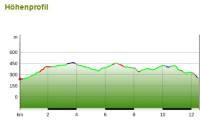

<div data-role="page" id="sww_karte">
    <div data-role="header" data-add-back-btn="true" data-back-btn-text="Zur&uuml;ck">
        <h1>Schiefer-Wacken-Weg / Karte</h1>
    </div>

    <div role="main" class="ui-content">
        <h3 class="ui-bar ui-bar-a ui-corner-all">Karten</h3>
        <div class="ui-body ui-body-a ui-corner-all">

            <p>
                <a href="img/karte_sww.jpg" class="swipebox" caption="Spalth&uuml;tte">
                    
                </a>
                <a href="img/hoehenprofil.jpg" class="swipebox" caption="Spalth&uuml;tte">
                    
                </a>
            </p>
        </div>
        <script>
            $(document).on("pagecreate",function(){
                //alert("pagecreate event fired!")
                $('.swipebox').swipebox();
            });
        </script>

    </div>


    <!--div data-role="footer">
        <h4>Page Footer</h4>
    </div-->
</div>